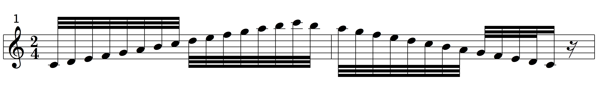
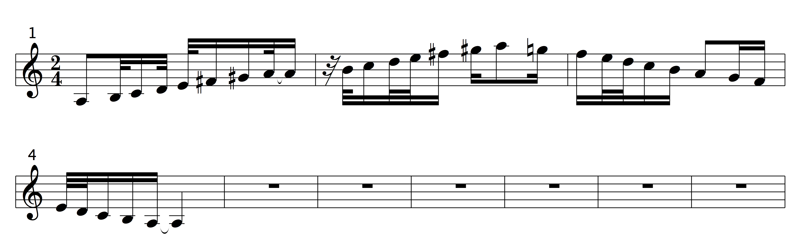

∞ ⋈ ∞ ∞ ⋈ ∞ ∞ ⋈ ∞ ∞ ⋈ ∞ ∞ ⋈ ∞ ∞ ⋈ ∞
Short introductory information about Western music
Interesting history
Western music was designed in the format of scales for each of the 12 notes, which repeat in different octaves. Western music instruments with predesigned semi-tones, for example guitars and pianos, are used to play only the notes of the scales. A guitar, for example, has frets. When a string of a guitar is pressed down, the string is effectively shortened, to make a note, represented by the length of the string, from that fret to the bridge.
The scales were designed to make it possible for musicians, who know the scales, to play harmoniously, without playing dissonant sounds. All the musicians in a group can for example agree a song in the scale of A-Major will be played. If they all know the A-Major scale, they can harmoniously play together. If one of them does not know the A-major scale it will be difficult to play harmoniously, because some notes, which are not included in A-Major, could be played. Such notes will clash with the notes of A-Major, and dissonant sounds will occur, which are not pleasant to listen to, unless it is purposefully done, to fit a required mood. All the scales (majors, harmonic minors and melodic minors) were designed to exclude the most dissonant sounds, which were, apparently, illegal to use in the West a long time ago. No scale includes, from the first note of the scale, 1 semi-tone and 6 semi-tones, because those intervals are the most dissonant.
The most consonant sound is playing two notes, which are an octave apart. Theoretically the wave length of a note doubles or halves from one octave to the next. An A-note will, for example, be 110 Hertz in one octave and 55 Hz or 220 Hz in the next octave, depending on whether the next note is in a lower or higher octave. Apparently most music instruments, with pre-designed intervals, are not designed to give the best possible consonance, because when musical waves are considered, spirals, which become larger or smaller, can be relevant. If one A is at 110 Hz the A in the next higher octave will not be exactly 220 Hz. It will be at 220 comma something Hz. That is why an instrument like a violin, without frets, if played well, gives a more consonant sound than instruments with frets, because musicians with good ears and good skills, can play the notes more consonant than on instruments with frets. Instruments with frets cannot play the comma something, because the tuning in different octaves is based on doubles or halves, exactly.
Basic structure of scales and notes
All the notes, which repeat in two octaves are called A - A♯ - B - C - C♯ - D - D♯ - E - F - F♯ - G - G♯ - A - A♯ - B - C - C♯ - D - D♯ - E - F - F♯ - G - G♯. It can also be written as A - B♭ - B - C - D♭ - D - E♭ - E - F - G♭ - G - A♭ - A - B♭ - B - C - D♭ - D - E♭ - E - F - G♭ - G - A♭. Between any two adjacent notes a half-tone exists, which is represented by a hyphen. As the notes appear above they also appear on a guitar or a piano adjacent to one another. Any scale can be written with the notes above, which represent two octaves. Any octave is from, for example A to A, B to B, C to C or G# to G#. G# can also be called A♭. The ♭ of A♭ indicates a note, which is one half-tone lower than A. One half-tone lower than A is one half-tone higher than G, therefore A♭ and G♯ indicate the same note. The symbol used for the first note of a scale will determine how the scale is written. The ♯-symbol is called sharp and the ♭-symbol is called flat. There are 13 notes in an octave, if the first note of the next octave is included. For each note, a scale was designed in the major, harmonic minor and melodic minor forms. All the major scales have the same format, in the sense that the same number of semi-tones, also called half-tones, exist among the 8 notes of all the major scales. The same applies to all harmonic minor scales and all melodic minor scales. Any scale has only 8 notes because all the notes in an octave are not included in any particular scale. All scales are structured from the 1st note of the scale to the first note (the 8th note) of the next octave. Take for example the simplest scale, which is C-major. C-major has no sharps or flats and is written; C, D, E, F, G, A, B, C. From the first C to the second C, 12 half-tones exist. The intervals of scales are called, a second, a third, a fourth, a fifth, a sixth, or a seventh. A second is from the first note to the second note of the scale. A third is from the first note to the third note of the scale. A fifth is from the first note to the fifth note, etc. In the major scale of C, thus a fifth is from C to G, counting from C. 5 letters, C, D, E, F, G. A third is from C to E, etc. A seventh is from C to B. Generally musicians do not refer to an eighth, because it is called an octave.
Structure of all major scales
The structure from the first to the 8th note are as follows:
1st note; two half-tones; 2nd note; two half-tones; 3rd note; one half-tone; 4th note; two half-tones; 5th note; two half-tones; 6th note; two half-tones; 7th note; one half-tone; 8th note. In the major scale of C it can be represented as follows:
C - - D - - E - F - - G - - A - - B - C. Each letter represents a note and each hyphen represents a half-step also called a half-tone. Between B and C and between E and F only one semi-tone exists. From the information available it is now possible to write the major scale of any note. The major scale of D can, for example, be constructed by using the notes given and using the correct intervals. The intervals between the 8 notes were given as 2, 2, 1, 2, 2, 2, 1. In total, 12 semi-tones. Starting at D the scale will be: D - - E - - F♯ - G - - A - - B - - C# - D. Note that when writing a scale the alphabet letters should follow in sequence. The major scale of D should not be written as D - - E - - G♭ - G - - A - - B - - C# - D, because F was excluded. F♯ and G♭refers to the same note, but G is used twice, which is not correct.
Structure of all harmonic minor scales
1st note; two semi-tones; 2nd note; 1 semi-tone; 3rd note; 2 semi-tones; 4th-note; 2 semi-tones; 5th note, 1 semi-tones; 6th note; 3 semi-tones, 7th note; one semi-tone; 8th note. The melodic minor scale of A can be represented as follows:
A - - B - C - - D - - E - F - - - G♯ - A
The intervals between the 8 notes were given as 2, 1, 2, 2, 1, 3, 1. In total, 12 semi-tones.
The way up and the way down a major scale and a harmonic minor scale is the same. The melodic minor scales are different, in the sense, the way up and the way down are not the same.
Structure of all melodic minor scales
UP: 1st note, two semi-tones, 2nd note; 1 semi-tone; 3rd note; 2 semi-tones; 4th note; 2 semi-tones; 5th note; 2 semi-tones; 6th note; 2 semi-tones; 7th note; 1 semi-tone; 8th note.
DOWN: 8th note; 2 semi-tones; 7th note; 2 semi-tones; 6th note; 1 semi-tone; 5th note; 2 semi-tones; 4th note; 2 semi-tones; 3rd note; 1 semi tone; 2nd note; 2 semi-tones; 1st note.
The melodic minor scale of A can be represented as follows:
UP: A - - B - C - - D - - E - - F♯ - - G♯ - A
DOWN: A - - G - - F - E - - D - - C - B - - A
Writing music using music scales on music paper and music software
The above notation indicates the major scale of C upwards and downwards in two octaves. Using the explanations above, it can be written as follows starting at the note on the left: C - - D - - E - F - - G - - A - - B - C - - D - - E - F - - G - - A - - B - C - B - - A - - G - - F - E - - D - - C - B - - A - - G - - F - E - - D - - C. Note that between B and C and E and F only one semi-tone exist, but among the other notes there are two semi-tones.

The harmonic minor of A, above can also be written as follows: A - - B - C - - D - - E - F - - - G♯ - A (played twice) - - B - C - - D - - E - F - - - G♯ - A - G♯ (no♮or ♯ indicates, on the way down the G♯ stays a G♯) - - - F - E - - D - - C - B - - A - G♯ - - - F - E - - D - - C - B - - A. The minor 3rd and minor 6th are one semi-tone lower than at a major scale, which gives minor scales a more melancholic feel than major scales.
The above notation of the melodic minor scale of A can be written as follows:
A - - B - C - - D - - E - - F♯ - - G♯ - A (played twice) - - B - C - - D - - E - - F♯ - - G♯ - A - - G (♮indicates on the way down the G♯ becomes a G) - - F - E - - D - - C - B - - A - - G - - F - E - - D - - C - B - - A.